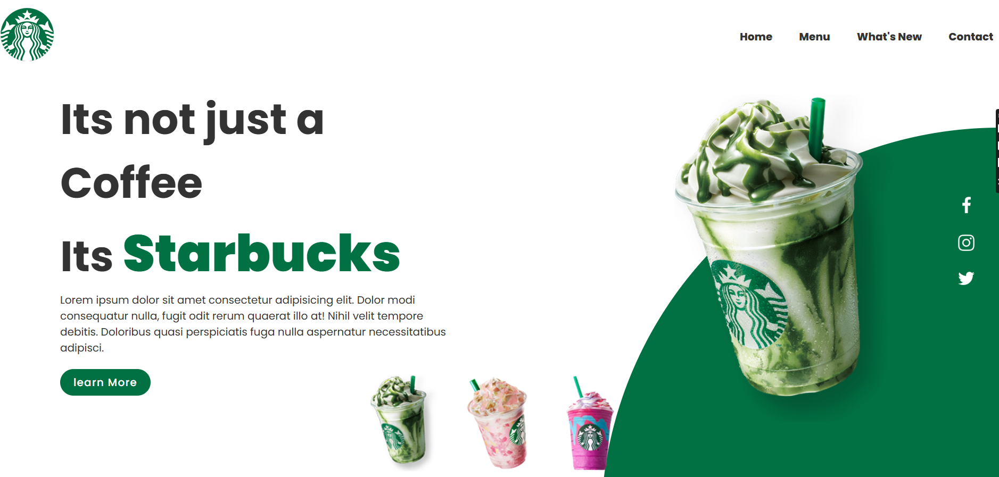
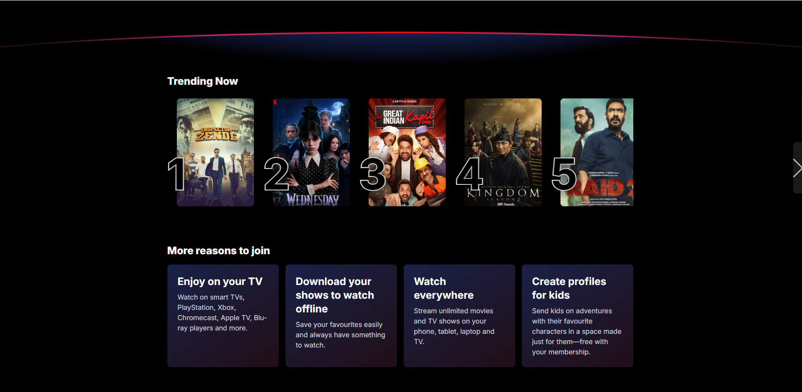
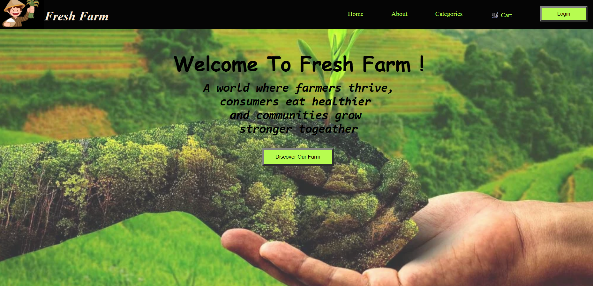
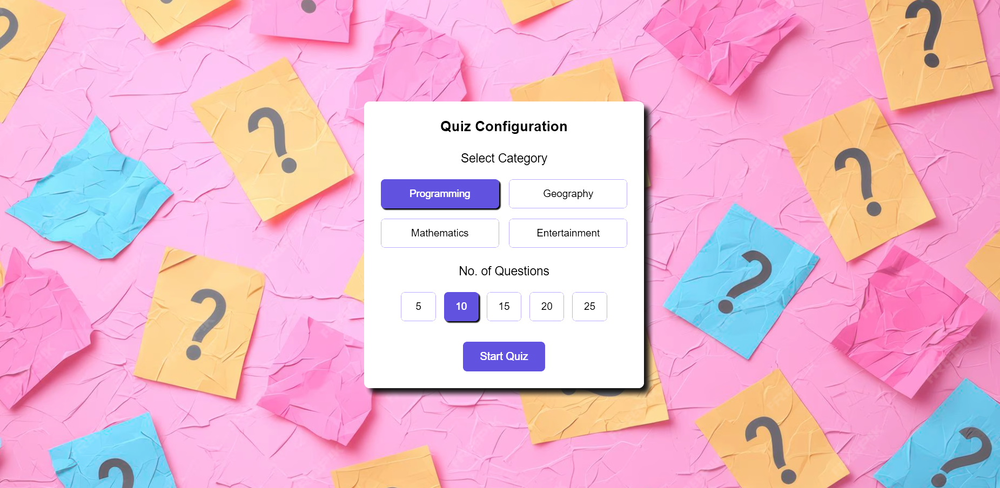
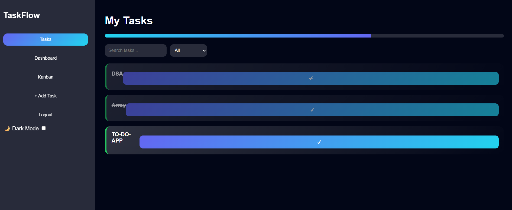

A SaaS-style productivity web application built to manage tasks with authentication, real-time UI updates, analytics dashboard, and drag-and-drop workflow. Designed to simulate real-world application architecture beyond a basic to-do list.
A fully responsive Netflix-inspired web application that replicates the look and feel of the real streaming platform. Built with modern UI design, interactive components, dynamic movie rows, and hover effects to simulate a real OTT experience. Focused on layout structuring, advanced CSS styling, and smooth user interaction.